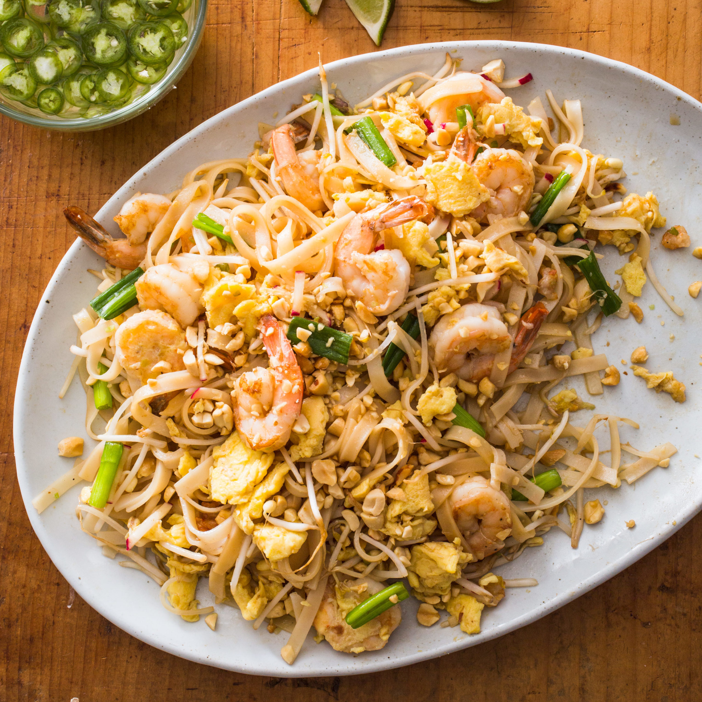

Pad Thai

Sweet, salty, umami funk straight to your mouthhole. Substitute protien for whatever you'd like.
Ingredients:
- ½ cup white sugar
- ½ cup distilled white vinegar
- ¼ cup soy sauce
- 2 tablespoons tamarind pulp
- 1 (12 ounce) package dried rice noodles
- ½ cup vegetable oil
- 1 ½ teaspoons minced garlic
- 4 eggs
- 1 (12 ounce) package firm tofu, cut into 1/2 inch strips
- 1 ½ tablespoons white sugar
- 1 ½ teaspoons salt
- 1 ½ cups ground peanuts
- 1 ½ teaspoons ground, dried oriental radish
- ½ cup chopped fresh chives
- 1 tablespoon paprika
- 2 cups fresh bean sprouts
- 1 lime, cut into wedges
Recipe:
Step 1:
To prepare pad thai sauce: In a medium saucepan over medium heat, blend sugar, vinegar, soy sauce, and tamarind pulp.
Step 2:
To make pad thai: Soak rice noodles in cold water until soft; drain. In a large skillet or wok over medium heat, warm oil and add garlic and eggs; scramble eggs. Add tofu and stir until well mixed; add noodles and stir until cooked.
Step 3:
Stir in pad thai sauce, 1 1/2 tablespoons sugar, and 1 1/2 teaspoons salt. Stir in peanuts and ground radish. Remove from heat and add chives and paprika.
Step 4:
Serve with lime and bean sprouts on the side.
Home